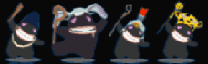

15 |
Las unidades humanas |
 |
|
Para construir su torre, los humanos se organizan en seis tipos de unidades con funciones precisas.
El transportista transporta los recursos necesarios para la construcción de la torre. Efectos de humor: Contento: Carga menos recursos y se mueve más lento. Enojado: Carga más recursos y se mueve más rápido.
El albañil utiliza los recursos traídos por los transportistas para construir la torre. Construye los pilares uno a uno y también sabe consolidar y reparar. Efectos de humor: Contento: Construye y se mueve más lento. Enojado: Construye y se mueve más rápido.
El protector se desplaza de una planta a otra con el único objetivo de molestarte. En cualquier momento puede empuñar un objeto defensivo para contrarrestar tus poderes. Al agotarse los puntos de vida de dicho objeto, lo suelta y debe esperar antes de poder empuñar otro. Los objetos defensivos: Existen cuatro objetos defensivos asociados a cuatro tipos de poderes: El pararrayos: absorbe los hechizos de relámpago. La esponja: absorbe los hechizos de agua. El extinguidor: absorbe los hechizos de fuego. El imán: absorbe los hechizos de viento. Al cargar un objeto defensivo, el albañil no le hace caso a su humor. Al destruirse el objeto, estará enojado. Contento: Se mueve más lento. Enojado: Se mueve más.
El jefe de obra vigila y motiva a las unidades mientras trabajan. Al estar en su instalación, los albañiles trabajan más rápido y los protectores empuñan un nuevo objeto defensivo inmediatamente. Efectos de humor: Contento: Se mueve más lento y aumenta los puntos de respeto generados por las unidades que vigila. Enojado: Se mueve más rápido y reduce los puntos de respeto generados por las unidades que vigila.
El herrero sólo entra en la torre una vez construida la forja, donde se instala a forjar el ariete que servirá para destrozar el portal de tu morada. Al finalizar la construcción del pináculo, el herrero sale de la forja con el ariete, sube al pináculo de la torre y golpea el portal hasta que ceda. Tendrás que destruir la forja para hacerlo salir de la torre. Es insensible al humor.
El predicador del mal entra a la torre cuando lo hombres están muy contentos para su gusto. Predica la mala palabra para arruinar el humor de los humanos. Es insensible al humor.
Es lo contrario al predicador del mal. El predicador del bien se consagra por completo a ti. Se mueve por toda la torre, cuando considera que los humanos están muy enojados, para llevar la buena palabra y mejorar su humor. Es insensible al humor.  |


 |
 |
 |